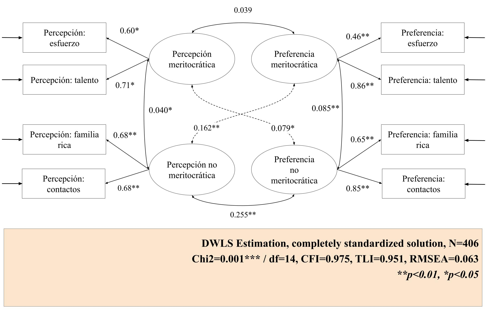
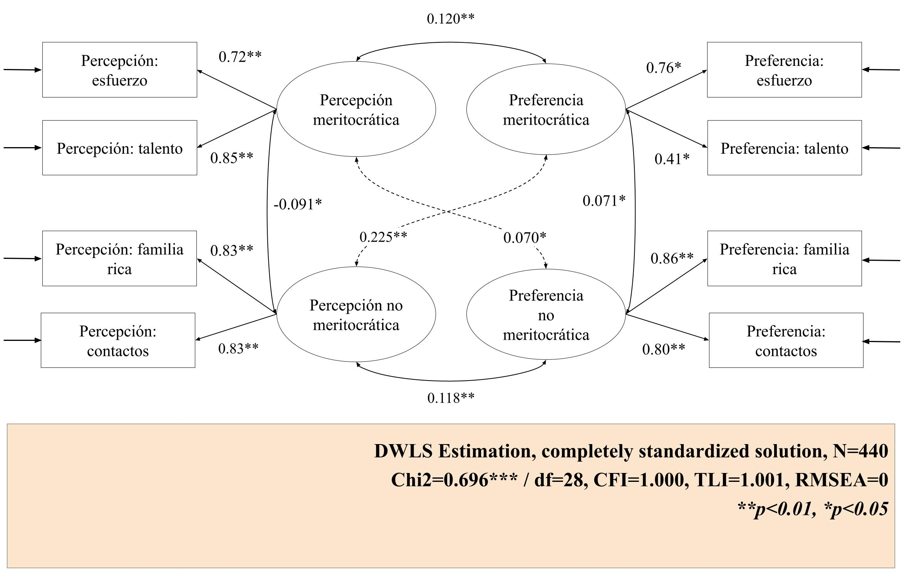

| chisq | df | pvalue | cfi | tli | rmsea | srmr | |
|---|---|---|---|---|---|---|---|
| General | 41.026 | 14 | 0.000 | 0.989 | 0.978 | 0.048 | 0.039 |
| Primary | 36.295 | 14 | 0.001 | 0.975 | 0.951 | 0.063 | 0.049 |
| Secondary | 10.877 | 14 | 0.696 | 1.000 | 1.004 | 0.000 | 0.029 |
Results
Cohort Invariance Test

The diagram shows the standardized factor loadings estimated with WLSMV for the primary and secondary education models. One of the first findings is that within each cohort, the loadings vary depending on the factor. In the case of the primary education model, the loadings of both meritocratic perception indicators are quite similar, with perception of effort at .60 and perception of talent at .71. In contrast, in the non-meritocratic preferences factor, the loadings vary greatly, with preference for effort being .46 and preference for talent being .86. This suggests that the factor explains the second factor more than the first. Finally, the indicators of the non-meritocratic preferences factor vary, but not as strongly.

In the secondary education model, some similarities can be seen in comparison to the primary model. The indicators of the meritocratic perception factor have slightly higher loadings than in the previous model, but they do not differ as much from each other. The difference in the indicators of meritocratic preference is reversed, with preference for effort becoming the highest (.76) and preference for talent the lowest (0.41). With regard to non-meritocratic preferences, the indicators have much more similar factor loadings than in the primary school model.
Table 1 shows the fit indices for each of the three models. All models achieved a non-significant chi-square, which could be expected given their sensitivity to large samples, such as those used in this study.
The first model is the general model, i.e., the one that includes primary and secondary school students. It can be seen that it has good fit indices (CFI=0.989, RMSEA=0.048, \(\chi^2\)(df=14)=41.026), so we can conclude that the four latent factor scale works well for students.
The second model contains data from primary students. In this case, the fit indices work acceptable (CFI=0.975, RMSEA=0.063, \(\chi^2\)(df=14)=36. 295). In this case, the scale has less validation than for the previous model.
It is noteworthy that, for the secondary education model, most indicators have values that are close to perfect (CFI=1, RMSEA=0, \(\chi^2\)(df=14)=11.779). However, the results of this model could be overfitting, so they should be interpreted with caution.
| chisq | df | p | rmsea | cfi | tli | |
|---|---|---|---|---|---|---|
| Configural | 40.192 | 26 | 0.037 | 0.036 | 0.993 | 0.985 |
| Thresholds | 77.941 | 34 | 0.000 | 0.055 | 0.979 | 0.965 |
| Strong | 91.320 | 38 | 0.000 | 0.058 | 0.974 | 0.962 |
The results of the different invariance models are displayed at the previous table. To examine invariance across cohorts the same steps in Dubravka et al. (2019) were followed, who propose the estimation of three models: the configural model, another restricting the thresholds, and finally restricting the thresholds and factor loadings.
The configural model was first estimated, which maintains the same factor structure for both baseline and midline. The configural model has good fit indices (CFI = 0.993, RMSEA = 0.036), so there is empirical evidence that the factor structure behaves stably in both groups.
Looking at the thresholds restricted model, it appears that when thresholds are restricted to equality, the four-factor latent model is not equivalent across the different cohorts in the study in accordance with Chen (2007) (\(\Delta\)CFI -.014 < -. 01); \(\Delta\)RMSEA .019 > .015). This result implies that by restricting thresholds, the meritocracy scale varies between primary and secondary education. In this case, invariance is not satisfied.
The level represented as strong restricts both thresholds and factor loadings. When compared with the previous level of invariance, it can be seen that the criteria for assuming that the meritocracy scale remains stable across cohorts are not met either. (\(\Delta\)CFI -.005 < -. 01); \(\Delta\)RMSEA .003 < .015), so invariance is rejected.
It is pertinent to ask to what extent these results are due to the instability of the secondary education model. An attempt was made to resolve its overfitting, but this was not possible, which may have had direct implications for this part of the analysis.
Longitudinal Invariance
A series of nested confirmatory factor analysis (CFA) models were estimated to assess the longitudinal measurement invariance of the constructs across the two waves of the study. The evaluation began with the configural model, which allows all parameters (loadings, intercepts, and residuals) to vary freely and just compare the same factor structure within individuals in time. This model served as the baseline for subsequent comparisons and demonstrated good fit to the data, with \(\chi^2\)(68) = 117.7, a Comparative Fit Index (CFI) of 0.991, and a Root Mean Square Error of Approximation (RMSEA) of 0.035, with a 90% confidence interval ranging from 0.024 to 0.046. These indices suggest that the same factorial structure is replicated across time points, meaning that the general configuration of items and latent variables remains stable.
| Model | χ^2 (df) | CFI | RMSEA (90 CI) | Δ χ^2 (Δ df) | Δ CFI | Δ RMSEA | Decision |
|---|---|---|---|---|---|---|---|
| Configural | 117.7 (68) | 0.991 | 0.035 (0.024-0.046) | 0 (0) | 0 | 0.000 | Reference |
| Weak | 122.51 (72) | 0.990 | 0.034 (0.024-0.045) | 4.809 (4) | 0 | -0.001 | Accept |
| Strong | 128.53 (80) | 0.991 | 0.032 (0.021-0.042) | 6.02 (8) | 0 | -0.002 | Accept |
| Strict | 130.17 (84) | 0.991 | 0.031 (0.02-0.04) | 1.635 (4) | 0 | -0.002 | Accept |
Subsequently, the weak invariance model was tested by constraining the factor loadings to be equal across waves. This model also showed a fit that passes the acceptable standards indicated by the literature: \(\chi^2\)(72) = 122.51, CFI = 0.990, RMSEA = 0.034 (90% CI: 0.024–0.045). The comparison with the configural model revealed a negligible and non-significant change in model fit, with \(\Delta \chi^2\)(4) = 4.809, \(\Delta\)CFI = 0.000, and \(\Delta\)RMSEA = -0.001. These results support the assumption of weak invariance, indicating that the strength of the relationship between items and latent constructs is consistent over time, i.e., within students.
The strong invariance model introduced additional constraints by setting item intercepts and loadings equal across time points, in addition to the equality of thresholds. Fixing thresholds is relevant to ensure that response categories represent equivalent levels of the latent construct across group or time. Whitout threshold invariance, comparisons of latent means may be biased due to differences in how caregories are interpreted rather than true differences in the construct (Liu et al., 2017). This model yielded a \(\chi^2\)(80) = 128.53, CFI = 0.991, and RMSEA = 0.032 (90% CI: 0.021–0.042). The changes in fit statistics relative to the weak model were \(\Delta \chi^2\)(8) = 6.02, \(\Delta\)CFI = 0.000, and \(\Delta\)RMSEA = -0.002. These minimal differences suggest that the additional constraints did not significantly impair the model’s fit. Therefore, strong invariance is supported, meaning that individuals with the same latent trait level are expected to have the same observed item scores across waves.
Finally, the strict invariance model imposed equality constraints on residual variances in addition to the loadings and intercepts. This model also showed good fit: \(\chi^2\)(84) = 130.17, CFI = 0.991, RMSEA = 0.031 (90% CI: 0.020–0.040). The comparison with the strong model revealed a \(\Delta \chi^2\)(4) = 1.635, \(\Delta\)CFI = 0.000, and \(\Delta\)RMSEA = -0.002. These changes are minimal and fall well within recommended thresholds for model comparison, indicating that strict invariance is also supported.
In summary, the results support full longitudinal measurement invariance—configural, weak, strong, and strict—suggesting that the constructs are measured equivalently across time. This justifies meaningful comparisons of latent means, variances, and covariances over time, and provides strong evidence of the temporal stability and psychometric robustness of the measurement model. However, it remains important to explore possible sources of misfit or localized non-invariance that could inform refinements to further improve the model.
In parallel, to detect potential sources of local misfit and evaluate the robustness of longitudinal measurement invariance, an univariate score tests was estimated at each level of the invariance hierarchy: configural, metric (weak), scalar (strong), and strict. Using the lavTestScore() function in lavaan, we tested whether specific equality constraints—such as equal loadings, thresholds, or residual variances across time—introduced statistically significant misfit. This method enables the identification of individual parameters that may violate invariance assumptions, even when global model fit remains acceptable.
Across all three constrained models (metric, scalar, and strict), the score tests revealed no significant violations. At the metric level, all loading constraints were supported. In the scalar model, both loadings and thresholds showed stability over time, with no indication of misfit. Finally, under strict invariance, residual variances and thresholds were also found to be invariant across waves. The largest test statistic (\(\chi^2\) = 3.829, p = .050) was observed for a threshold in preference for talent indicator, yet this did not reach significance.
These results provide strong evidence that full longitudinal measurement invariance holds in the data. The measurement model is stable over time in terms, supporting meaningful comparison of latent variable means, variances, and structural relations across time. Full results of the score tests, including all tested constraints and their associated statistics, are presented in the supplementary materials.
Conditional Longitudinal Invariance
Although no evidence was found in favor of measurement invariance between cohorts, the analysis nevertheless explored the potential heterogeneity associated with cohort differences, given the plausible expectation of their impact on socialization processes. To evaluate the robustness of longitudinal measurement invariance over time while accounting for these effects, a series of nested models were estimated, both with and without controlling for cohort through a dummy variable predicting each latent factor.
All models presented fit indices that exceed commonly accepted standards in the literature, with CFI values above .990 and RMSEA values below .035. The configural model (\(\chi^2\) = 117.70, df = 68, CFI = .991, RMSEA = .035 [.024–.046]) served as the baseline, and subsequent models imposing equality constraints on factor loadings (weak invariance), intercepts (strong invariance), and residual variances (strict invariance) showed negligible changes in fit indices (e.g., \(\Delta\)CFI ≤ .001 across all steps). This pattern held even after including cohort as a covariate: for instance, the strict invariance model with cohort control yielded \(\chi^2\) = 134.21 (df = 92), CFI = .991, and RMSEA = .028 [.017–.038], closely resembling the model without cohort control (\(\chi^2\) = 130.17, df = 84, CFI = .991, RMSEA = .031 [.020–.040]). These results support the conclusion that full longitudinal measurement invariance is maintained, regardless of cohort-related heterogeneity.
| Model | χ^2 (df) | CFI | RMSEA (90 CI) | Δ χ^2 (Δ df) | Δ CFI | Δ RMSEA | Decision |
|---|---|---|---|---|---|---|---|
| Configural | 122.27 (76) | 0.990 | 0.032 (0.021-0.042) | 0 (0) | 0.000 | 0.000 | Reference |
| Weak | 126.95 (80) | 0.990 | 0.032 (0.021-0.042) | 4.684 (4) | 0.000 | -0.001 | Accept |
| Strong | 128.55 (88) | 0.991 | 0.028 (0.017-0.038) | 1.598 (8) | 0.001 | -0.004 | Accept |
| Strict | 131.64 (92) | 0.991 | 0.027 (0.016-0.037) | 3.086 (4) | 0.000 | -0.001 | Accept |
Substantively, these results suggest that the factor structure and measurement properties of the constructs are stable over time and are not significantly influenced by cohort membership. The consistency of the fit indices before and after controlling for cohort indicates that observed longitudinal invariance is not an artifact of generational differences. This strengthens the validity of our interpretations regarding temporal stability and change in the latent constructs under study.
References
Chen, F. F. (2007). Sensitivity of Goodness of Fit Indexes to Lack of Measurement Invariance. Structural Equation Modeling: A Multidisciplinary Journal, 14(3), 464–504. https://doi.org/10.1080/10705510701301834
Liu, Y., Millsap, R. E., West, S. G., Tein, J.-Y., Tanaka, R., & Grimm, K. J. (2017). Testing measurement invariance in longitudinal data with ordered-categorical measures. Psychological Methods, 22(3), 486–506. https://doi.org/10.1037/met0000075